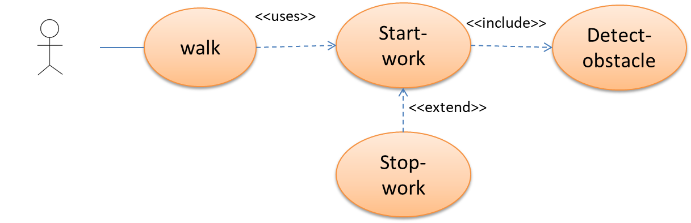
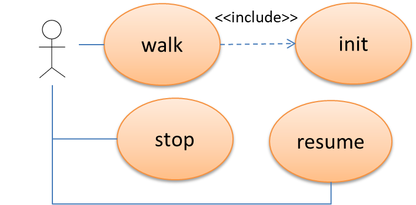

Requirements
We want to build a (ddr) robot able to walk along the boundary of a rectangular room. More specifically:init : the robot initially waits in its home location for a command start sent by a human operator;walk : after receiving start, the robot begins to walk, by moving along the room boundary, until it reaches the home again;
stop : while doing its walk activity, the robot must be able to react to the command stop sent by the operator, by 'immediately' stopping its walk;resume : while stopped, the robot waits for a command resume sent by the operator, to continue its walk from the point reached before stopping.
Note that now we have introduced a 'tag' for each requirement.
Requirement analysis: UML and beyond
-
In UML, requirements are typically captured in Use Cases (
UC ) represented in UML by Use case diagram. -
Use cases constitute a powerful, user-centric tool for the software requirements specification process.
A use case shows the interaction of
external actors with the system and can be usually be captured in one sentence. A use case yields anobservable result that is of some value to those actors - A use-case diagram helps to grasp the 'big picture'; it serves as a
map , helping the reader to navigate the requirement model.Take your time to understand the meaning behind the elements you use.
Whether a line is solid or dashed can make a huge difference in semantics. See UML Use Case Include. Correct?
 Better?

Are stop and resume completerly unrelated with the other use cases? -
Each symbol in the diagram provides a lot of additional information
that often has no representation in the picture.
The following table shows some of the information that may be part of the model as well:
UC-ID walk Actors The (logged-in) human operator Description (User story )As a operator, I want that the robot performs the action in autonomous way. Preconditions the robot is at home and the operator (is logged into the system and) has sent the command start Activity after receiving the command start, the robot begins to walk, by moving along the room boundary, until it reaches the home again Postconditions If plength is the value of the perimeter of the room and rdim is the dimension of a circle that circumscribes the robot , the robot has covered a distance not less than plength-rdim*4 and has reached the home again. -
Large chunks of the model are again informal.
The preconditions and postconditions of the use case, for instance, are formulated in plain text.
However, a model provided by aclass as a description of thedomain . could hold attributes, operations, constraints and much more. Classes are much more precise than aglossary , showing well-defined relationships between classes. - In a textual specification, the context of the requirements can be hard to grasp. In a model, however, the context is clearly defined.
- A Qak model can help us in capturing the requirements in a more fruitful way.
Messages
Dispatch start : start(ARG) Dispatch stop : stop(ARG) Dispatch resume : resume(ARG)
Components
 We do not need any concrete robot in order to reason about requirements and on the logical behavior of the system.
We do not need any concrete robot in order to reason about requirements and on the logical behavior of the system.
Modelrobotboundary.qak |
Test plantestRobotboundary.kt |